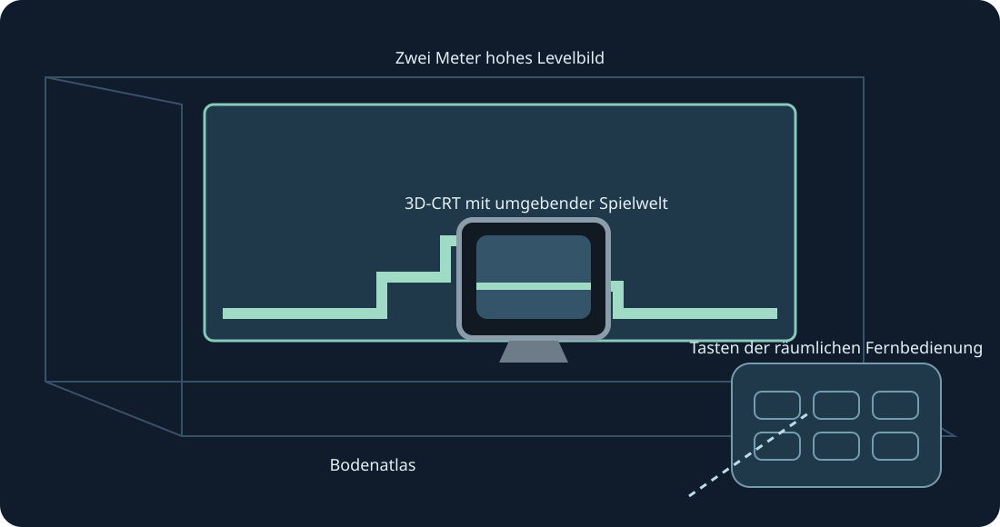

Levelwände, Bodenansicht, Arcade-Tisch, CRT und gebogene Galerie. Experimentelle XR-Vorschau. Beide Griffe skalieren.
Experimentelle XR-Vorschau. Der Nutzer bestätigte die sichtbare 0.4-Sammlung auf Quest 3; übermittelte Frames wurden protokolliert. 0.5 wird separat gebaut und geprüft. Tracking, Komfort, Passthrough, Raumplatzierung und längeres Spielen benötigen echte Gerätetests.
Für den späteren Test Entwicklermodus aktivieren und die öffentliche ARM64-APK mit SideQuest oder adb install -r installieren. Mario Compilation Ultra XR unter Unbekannte Quellen öffnen, eine Cartridge oder ZIP im Systemdialog wählen und starten. All-Stars + World und Yoshi’s Island separat importieren. Die öffentliche APK enthält keine ROMs oder Spielstände.
Level, natives CRT, Fernbedienung oder Optionen als Ziel wählen. Ein Griff verschiebt/dreht; zwei skalieren das Level auch bei gesperrter Position. Feinsteuerung und Halbieren/Verdoppeln/Zurücksetzen sind ebenfalls verfügbar. Wiederherstellen holt die Oberfläche zurück. Y öffnet Optionen; die Spielseite enthält alle SNES-Tasten.
Stick mit Pinch ziehen, andere Hand für Tasten. Mittelfinger-Pinch greift Griffe. Trackingverlust löst Eingaben.
Neue Installationen fordern 90 Hz und ein transparentes zwei Meter hohes AR-Wandbild an. Nicht unterstützte Raten fallen zurück; die Simulation behält ihr Originaltempo. Raumscan und Szene-/Ankerrechte sind für automatische Wände optional. Manuelle Platzierung und Bodenkalibrierung bleiben verfügbar. Passthrough liefert die Laufzeit; keine Internet-, Mikrofon- oder Kamerabildrechte.
Geisterbilder sind Hinweise und simulieren keine entfernten Objekte. Geprüfte Positionen können sofort erscheinen; gelernte Bilder stammen nur aus dem lokalen Spiel.
Der Arcade-Tisch zeigt den geladenen Bereich. Physik und Objektaktivierung bleiben original.
PC-Schnellsteuerung: rechten Stick gedrückt halten; Steuerkreuz links/rechts zoomt, oben 1:1, unten ganze Karte, A fixiert, B Originalkamera, X Screenshot, Y Spieler verfolgen. Loslassen stellt SNES-Steuerung wieder her. F1 oder Y-Hilfe im Menü öffnet die bebilderte Erklärung.
SNES: D-pad · A · B · X · Y · L · R · Start · Select
Touch: A → SNES B · B → SNES Y · X → SNES A · RT → SNES X · R3 → Start · LT → Rewind · Y → Optionen bewegen
Parity · Validation